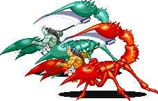
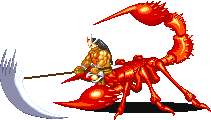
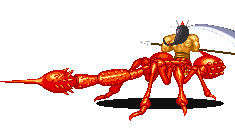
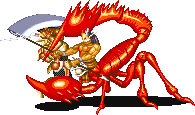
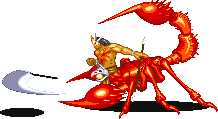
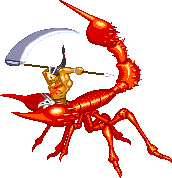
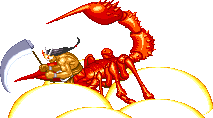
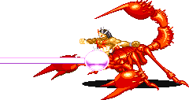
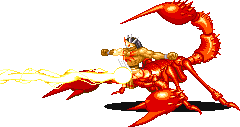
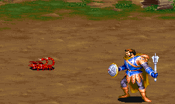

MAN SCORPION
|  베수비아 강(스테이지 3-B) 보스 '맨 스콜피온' ※ 녹색은 2인 이상 플레이시 등장한다. |
기본 정보
픽 포켓으로 얻을 수 있는 아이템
 (ring of spell turning) 혹은 (ring of spell turning) 혹은 클리어 시간 측정의 시작 시점
맨 스콜피온의 HP가 보이는 시점부터
최단 시간 클리어 기록
클레릭 4:49 |
|||||||||
드랍 가능한 아이템 - 돈 + 점수 아이템 + 그외 아이템의 구성으로 떨어진다.
돈 : 10sp x1 + 1sp x5 (15sp) / 10sp x2 (20sp) / 10sp x2 + 5sp x1 (25sp)
기타 : 스크롤(scroll) 최대 4레벨
| 점수 아이템 : | |
| 도구류 : | |
| 완드류 : | - 매직 유저가 있을 때만 드랍 가능. | |
상반신은 인간의 형태를 하고 하반신은 전갈의 형태를 하고 있는 몬스터. 다른 코스의 다크 워리어에 비해 좀 더 쉬운 걸로 인식되어 있는 보스다. 그러나 공격패턴만 놓고 보면 까다롭고 쉽지가 않은 보스며 특히 여러명이서 플레이 할 때 던지는 낫은 상당히 무섭다.
연속 공격이 잘 안통하기 때문에 클래스에 따라 상대하가 좀 까다로울 수도 있다.
연속 공격이 잘 안통하기 때문에 클래스에 따라 상대하가 좀 까다로울 수도 있다.
HP에 대한 추가 설명
화면상에 표시되는 HP는 붉은색의 HP이며 녹색의 HP는 따로 표시되지 않는다.
경험치 분배
2인 이상 플레이시 녹색을 물리친 플레이어가 FINISH xp인 15000xp를 얻는다. 그러나 NICE FIGHT xp가
꼭 나머지 플레이어에게 돌아가는 것은 아니다. 녹색을 물리친 플레이어를 포함하여 조건에 따라 돌아가며 즉, 15000xp를 얻은 플레이어가 NICE FIGHT xp도 얻게 되어 총 23000xp를 얻을 수도 있다는 뜻이다.
꼭 나머지 플레이어에게 돌아가는 것은 아니다. 녹색을 물리친 플레이어를 포함하여 조건에 따라 돌아가며 즉, 15000xp를 얻은 플레이어가 NICE FIGHT xp도 얻게 되어 총 23000xp를 얻을 수도 있다는 뜻이다.
패턴 분석
등장
적색의 경우 오른쪽에서, 녹색의 경우 왼쪽에서 점프 공격을 하면서 등장한다.
따라서 등장할 때 무턱대고 접근하면 데미지를 입는다.
※ 붉은색은 파이터가 입는 데미지, 푸른색은 매직 유저가 입는 데미지.
클레릭/드워프는 파이터에 가까운 데미지를, 시프/엘프는 매직 유저에 가까운 데미지를 입는다.
이동/돌진 (19/29)
이동속도가 다른 보스에 비해 빠르다. 또한 몸체 앞쪽의 집게 발에 데미지 판정이 있기 때문에 몸체에 닿는 것 만으로 데미지를 입으며 그로 인해 이동 또한 공격수단이 된다. 가드가 가능하지만 가드를 하기 보다는 먼저 공격을 하거나 회피를 하는게 낫다.
또한 때때로 지그재그로 돌진을 하기도 한다. 물론 닿으면 데미지를 입는다.
근접 공격 (23/34)
적색의 경우 오른쪽에서, 녹색의 경우 왼쪽에서 점프 공격을 하면서 등장한다.
따라서 등장할 때 무턱대고 접근하면 데미지를 입는다.
※ 붉은색은 파이터가 입는 데미지, 푸른색은 매직 유저가 입는 데미지.
클레릭/드워프는 파이터에 가까운 데미지를, 시프/엘프는 매직 유저에 가까운 데미지를 입는다.
이동/돌진 (19/29)
이동속도가 다른 보스에 비해 빠르다. 또한 몸체 앞쪽의 집게 발에 데미지 판정이 있기 때문에 몸체에 닿는 것 만으로 데미지를 입으며 그로 인해 이동 또한 공격수단이 된다. 가드가 가능하지만 가드를 하기 보다는 먼저 공격을 하거나 회피를 하는게 낫다.
또한 때때로 지그재그로 돌진을 하기도 한다. 물론 닿으면 데미지를 입는다.
근접 공격 (23/34)
|  | 들고 있는 낫을 휘두른다. 공격속도가 느리기 때문에 크게 위협적 이지는 않다. |
| 꼬리 공격 1 (23/34) | |
|  | 몸을 확 돌려서 꼬리로 찌른다. 제법 빠르기도 하고 리치도 긴편이라 가까이 있을 때 순간 당할 수도 있는 공격이다. 데미지도 의외로 높은 편이다. |
| 꼬리 공격 2 (29/29) | |
|  | 앞쪽의 집게발로 플레이어를 붙잡고 꼬리로 사정없이 찌르는 공격이다. 일종의 잡기 공격이라 가드를 할 수 없다. 또한 순간적으로 잡기 때문에 보기 피하기는 힘들다. 그러나 역시 잡기이니 만큼 레버나 방향키를 마구 흔들면 금방 풀린다. |
| 낫 던지기 (21/33) | |
|  | 근접공격과 모션은 같은데 낫의 날부분이 회전을 하면서 날아다닌다. 맨 스콜피온의 공격 중 가장 피곤한 공격으로 특히 2인 이상 플레이시 그 진가가 나타난다. - 두 마리가 전부 던져버리면 정말 대책이 없다 - 가드가 가능하고 대점프로 회피를 할 수 있지만 날아다니는 궤도가 완전히 무작위 이며 게다가 낫을 거둬들이는 시간도 일정하지 않기 때문에 그냥 앉는게 가장 편하다. 낫이 돌고 있는 중에 맨 스콜피온이 쓰러진다면 낫이 맨 스콜피온 주위를 날아다니다가 일어서면 거둬들인다. |
| 점프 공격 (19/29) | |
|  | 점프를 해서 플레이어를 내려찍는다. 몸체에 닿는 즉시 데미지를 입지만 가드가 가능하다. 살짝 전진하는 점프를 할 때도 있고 먼거리 점프를 할 때도 있으며 화면 위 아래로 수직으로 이동하는 점프를 할 때도 있고 제자리 점프를 할 때도 있다. 또한 그림자치기로 접근을 시도하면 위 아래 점프를 통해 회피를 하기도 한다. 대각선 점프는 없으니 접근 할 때는 대각선에서 접근하는게 좋다. |
| 점프 공격 2 폭발 데미지는 21/33, 점프 자체의 데미지는 위의 공격과 같다. | |
|  | 쓰러졌다가 일어날 떄나 가드 후 카운터 공격으로 주로 이용하는 공격으로 포즈는 일반 점프 공격과 같지만 착지시 폭발이 일어난다. 점프 공격은 가드가 되지만 폭발은 가드가 되지 않고 불 저항의 반지가 있으면 폭발에 대한 데미지를 입지 않는다. 일반 점프와는 달리 맨 스콜피온이 착지하기 전에 점프를 하면 피해를 입지 않고 폭발을 피할 수 있다. 따라서 점프 찍기 공격으로 제압이 가능하다. |
| 플래쉬 투 스톤 (24/37) | |
|  | 앞쪽 중앙부의 구슬에서 상자의 석화 트랩과 같은 성질의 광선을 발사한다. 일단 구슬에 빛을 모은 후 플레이어가 일직선상에 있으면 바로 발사 하며 없으면 크게 원을 그리면서 돌아다니다가 일직선상에 놓였을 때 발사 한다. 정확히 조준하고 발사 하는 것이 아니며 또한 일단 발사 준비를 하고 나면 앞뒤로 방향전환을 못하기 때문에 피하기 어렵지 않다. 다만 맞으면 데미지도 크고 레버나 방향키를 좌우로 빠르게 흔들지 못하면 돌이 되어 게임오버가 되기 때문에 어떻게 보면 가장 위험한 공격이다. 주문 무효화 반지나 오브가 있다면 피해를 입지 않는다. ※ 이 공격이 발동하는 도중에는 화면이 스크롤 되지 않는다. |
| 라이트닝 볼트 (22/33) | |
|  | 위의 공격과 같은 성격의 공격으로 라이트닝 볼트를 모아서 쏜다. 마찬가지로 피하기 어렵지 않으며 덜 위험하다. 또한 주문 무효화 반지가 있으면 피해를 입지 않는다. ※ 이 공격이 발동하는 도중에는 화면이 스크롤 되지 않는다. |
지원군
트로글로다이트와 구울이 지원공격을 한다. 특히 트리글로다이트가 상당히 성가시다.
1~2인 플레이시
트로글로다이트 2마리가 뛰쳐나온 후 이들을 물리치면 구울 2마리가 소환된다. 이 패턴이 10번 반복된다.
3~4인 플레이시
트로글로다이트 4마리가 뛰쳐나온 후 이들을 물리치면 구울 4마리가 소환된다. 이 패턴이 10번 반복된다.
1~2인 플레이시
트로글로다이트 2마리가 뛰쳐나온 후 이들을 물리치면 구울 2마리가 소환된다. 이 패턴이 10번 반복된다.
3~4인 플레이시
트로글로다이트 4마리가 뛰쳐나온 후 이들을 물리치면 구울 4마리가 소환된다. 이 패턴이 10번 반복된다.
기타 특성
- 콤보를 넣기가 상당히 힘들다. 아주 잘 쓰러지고 또 쓰러지는 모션이 나오기 시작하면 그 어떤 공격도 절대로 히트하지 않기 때문이다. 그래서 왠만한 콤보는 다 실패하게 된다. 또한 쓰러지는 타이밍이 아주 제멋대로라 히트 수 많고 화려한 콤보는 빗나가기 딱 좋다. 일반 A공격을 포함한 간단한 콤보로 차근차근 공격하는게 좋다.
- 쓰러졌을 때 다운공격을 4번 성공시키면 순간 무적상태가 되며 바로 일어나서 제자리 점프 찍기를 감행한다. 그리고 쓰러졌을 때 스턴상태라면 그 후에 일어나서 플레이어의 첫 공격에 무조건 쓰러진다.
- 지원군의 방해로 인해 A공격이 틈이 생기는 경우가 종종 생기는데 맨 스콜피온은 약간의 틈이라도 생기면 가드를 하거나 점프공격으로 잘 빠져나간다. 아이템을 줍는 일이 발생하지 않도록 주의하고 빈틈이 생기기 전에 슬래쉬로 연결하는 것도 괜찮다(드워프 제외).
- 간혹 공격 당하지도 않았는데 혼자 움찔 하는 경우가 있다. 웃기게도 이때는 잠깐 무적상태가 된다.
- 쓰러졌을 때 다운공격을 4번 성공시키면 순간 무적상태가 되며 바로 일어나서 제자리 점프 찍기를 감행한다. 그리고 쓰러졌을 때 스턴상태라면 그 후에 일어나서 플레이어의 첫 공격에 무조건 쓰러진다.
- 지원군의 방해로 인해 A공격이 틈이 생기는 경우가 종종 생기는데 맨 스콜피온은 약간의 틈이라도 생기면 가드를 하거나 점프공격으로 잘 빠져나간다. 아이템을 줍는 일이 발생하지 않도록 주의하고 빈틈이 생기기 전에 슬래쉬로 연결하는 것도 괜찮다(드워프 제외).
- 간혹 공격 당하지도 않았는데 혼자 움찔 하는 경우가 있다. 웃기게도 이때는 잠깐 무적상태가 된다.
공통 공략법
◎ 방해요소의 제거
맨 스콜피온 지역 돌입 초기에 나오는 공격적인 자이언트 스콜피온들은 대부분 알아서 사라지지만 딱 두마리가 남는다. 이 녀석들은 나중에 맨 스콜피온과 싸우게 될 때 걸치적 거릴 수 있다. 매직 유저나 엘프가 아니라면, 그리고 시간이 급한 타임어택이 아니라면 먼저 신경써서 제거 해 두는게 좋다.
◎ 돌아다니게 하지 말라
움직임이 빠르고 또 앞쪽에 공격판정이 있어서 돌아다니게 되면 쉽게 제압이 안되며 갑자기 던지는 회전 낫은 플레이어를 한동안 앉은뱅이로 만들어 버린다. 대신에 처음 등장 할 때 등뒤가 비고 또 쓰러졌다가 일어날 때 쉽게 제압이 되니 처음 등장 할 때를 확실히 노려서 쓰러뜨리고 악착같이 붙어서 공격하자.
2인 이상이라면 한명이 맨 스콜피온 한마리씩 전담마크해서 패라. 만약 초반에 쓰러뜨릴 자신이 없으면 클레릭이라면 컨티뉴얼 라이트를 시전하고, 파이터/드워프/시프 뿐이라면 이프리트의 항아리를 써서라도 쓰러뜨리는게 좋다.
돌아다니게 될 경우 피곤해지는 건 특히 2인 이상 플레이시 해당되는 사항이다. 무엇보다도 낫을 던지기 시작하면 매직유저나 엘프가 없다면 참 정신 없어진다. 낫이 마구 돌아다닌다면 매직 유저나 엘프가 있다면 공격 주문을 써서 쓰러뜨리자. 불가능 하다면 전부 앉은 후 의사소통을 확실히 해서 한쪽으로 열심히 슬라이딩을 해서 피하는 수 밖에 없다. 1인 플레이라면 바로 앉은 후 한쪽으로 슬라이딩해서 거리를 벌리자.
◎ 지원군의 견제
지원 공격을 하는 트로글로다이트와 구울이나 플레이어를 상당히 성가시게 한다. 파이터나 드워프라면 여차하면 A+B를 써서 쫓아내도 되지만 나머지 클래스는 그림자 치기 위치를 최대한 이용해야 된다. 저 녀석들은 그림자 치기 위치에 있게 되면 자신의 공격이 명중하지 않더라도 계속 공격만 하는 경우가 많기 때문이다. 플레이어는 맨 스콜피온을 열심히 때리고 있는데 저 녀석들은 뒤에서 헛손질만 할 수도 있는 것이다.
물론 절대적인건 아니다. 적절한 위치는 때에 따라 계속 바뀐다.
맨 스콜피온 지역 돌입 초기에 나오는 공격적인 자이언트 스콜피온들은 대부분 알아서 사라지지만 딱 두마리가 남는다. 이 녀석들은 나중에 맨 스콜피온과 싸우게 될 때 걸치적 거릴 수 있다. 매직 유저나 엘프가 아니라면, 그리고 시간이 급한 타임어택이 아니라면 먼저 신경써서 제거 해 두는게 좋다.

◎ 돌아다니게 하지 말라
움직임이 빠르고 또 앞쪽에 공격판정이 있어서 돌아다니게 되면 쉽게 제압이 안되며 갑자기 던지는 회전 낫은 플레이어를 한동안 앉은뱅이로 만들어 버린다. 대신에 처음 등장 할 때 등뒤가 비고 또 쓰러졌다가 일어날 때 쉽게 제압이 되니 처음 등장 할 때를 확실히 노려서 쓰러뜨리고 악착같이 붙어서 공격하자.
2인 이상이라면 한명이 맨 스콜피온 한마리씩 전담마크해서 패라. 만약 초반에 쓰러뜨릴 자신이 없으면 클레릭이라면 컨티뉴얼 라이트를 시전하고, 파이터/드워프/시프 뿐이라면 이프리트의 항아리를 써서라도 쓰러뜨리는게 좋다.
돌아다니게 될 경우 피곤해지는 건 특히 2인 이상 플레이시 해당되는 사항이다. 무엇보다도 낫을 던지기 시작하면 매직유저나 엘프가 없다면 참 정신 없어진다. 낫이 마구 돌아다닌다면 매직 유저나 엘프가 있다면 공격 주문을 써서 쓰러뜨리자. 불가능 하다면 전부 앉은 후 의사소통을 확실히 해서 한쪽으로 열심히 슬라이딩을 해서 피하는 수 밖에 없다. 1인 플레이라면 바로 앉은 후 한쪽으로 슬라이딩해서 거리를 벌리자.
◎ 지원군의 견제
지원 공격을 하는 트로글로다이트와 구울이나 플레이어를 상당히 성가시게 한다. 파이터나 드워프라면 여차하면 A+B를 써서 쫓아내도 되지만 나머지 클래스는 그림자 치기 위치를 최대한 이용해야 된다. 저 녀석들은 그림자 치기 위치에 있게 되면 자신의 공격이 명중하지 않더라도 계속 공격만 하는 경우가 많기 때문이다. 플레이어는 맨 스콜피온을 열심히 때리고 있는데 저 녀석들은 뒤에서 헛손질만 할 수도 있는 것이다.
물론 절대적인건 아니다. 적절한 위치는 때에 따라 계속 바뀐다.